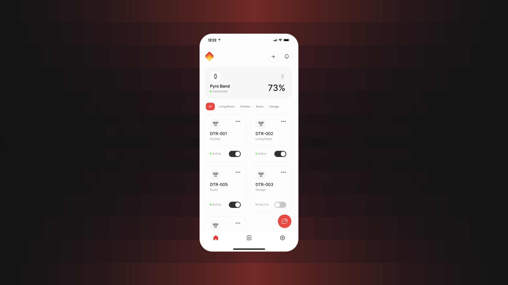
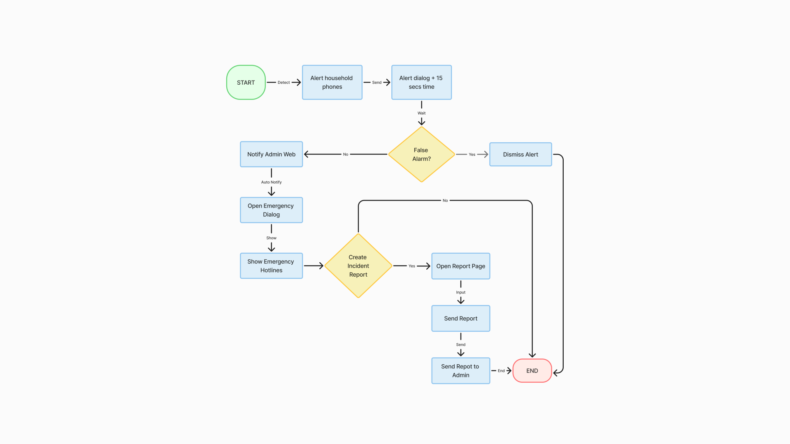
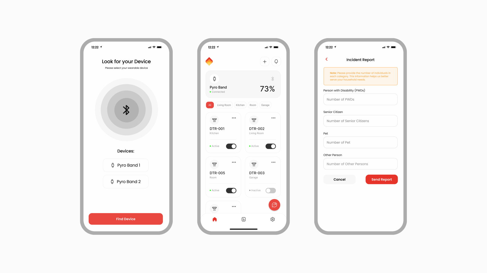

Pyro Guard

Background
Pyro Guard is an IoT safety ecosystem built around a smoke and fire detector and the Pyro Band, a custom Bluetooth wearable. Homeowners can monitor their environment in real time, check and manage each device, and trust that a critical alert will reach them whether they’re on their phone or fast asleep.

Problem
A safety app has to work for two very different moments: calm, everyday monitoring and a high-stress emergency. The dashboard needed to feel light and approachable day to day, but the active alert state had to be close to foolproof. In a fire, people are panicked and overloaded, so the screen has to drop everything non-essential and let them trigger emergency actions or dismiss a false alarm almost instantly.


Solution
I focused on fast comprehension, a clear visual hierarchy, and preventing mistakes under pressure. For daily use, I designed a soft, minimal dashboard with a dark charcoal hero card for the Pyro Band. It signals the importance of the hardware right away without crowding the screen.